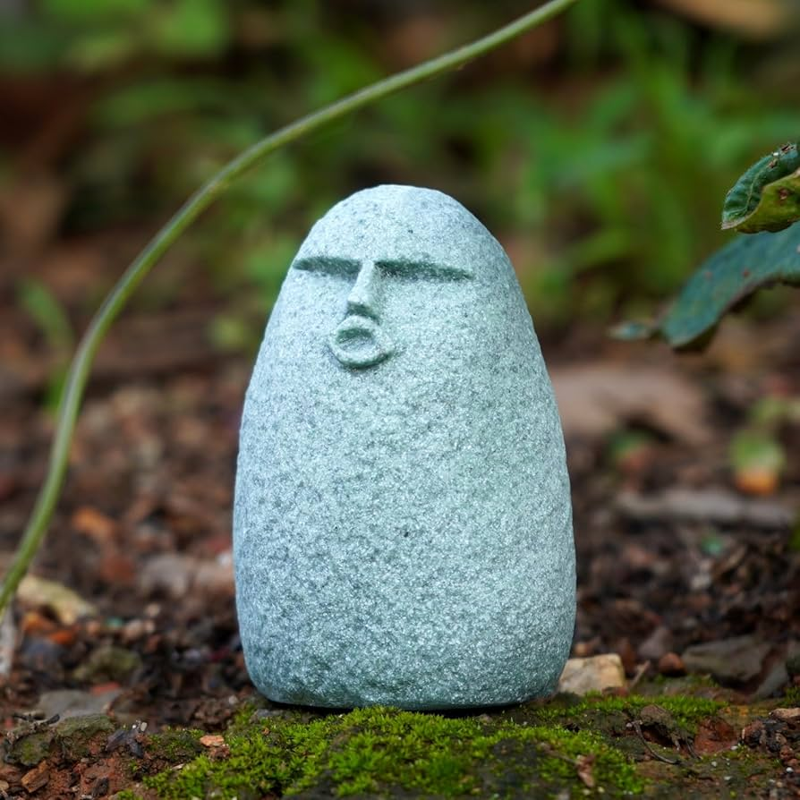

Contada há muitos anos na comunidade de Ribeirão Grande, esta história trata de uma pedra à beira da cachoeira num lugar chamado Fundão. No verão, muitos tomam banho próximo a esta pedra. Hoje existem algumas versões, entre elas, escolhemos duas: "Certa vez uma mulher teve um filho, mas após o seu nascimento, ao amanhecer, ele morreu. Então sua mãe o enterrou debaixo de uma pedra no Fundão. Durante muito tempo ouviu-se o choro daquele bebê vindo de dentro da pedra. Por isso pedra do cochicho, pois lembra o choro de um recém-nascido". (sic) Outra Outra versão: "Uma mulher do Ribeirão Grande escondeu um colar de ouro no formato de um coração embaixo de uma pedra na cachoeira conhecida como Fundão. À noite dizem que a alma desta senhora, falecida, vai pra cima da pedra falar sozinha. Ela fala muito baixo, por isso diz-se que ela cochicha. Conta-se que só a bisneta dessa senhora poderia tirar o colar tão cobiçado, porém, ela também já faleceu. Quem tenta pegar o colar é puxado pelo pé até o fundo, onde lá a mulher os afoga, segundo a lenda” (sic)
OLIVEIRA, Laércio Vitorino de Jesus (Org.). Memória: um patrimônio irrenunciável: comunidades do distrito de Ribeirão Pequeno da Laguna. Palhoça: Editora Unisul, 2010.